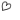

| 2017/07 10 Mon | 私にしては長めのブログ_(．．*)vol.197 |
みなさんこんばんはー！
19歳 相楽伊織です！
{kind=link}
浴衣～
夏を感じて～
でも最近もう暑すぎて
半分溶けてる～
せめて30度超えないで～
出来るなら25度以内におさめて～
夏までに髪の毛伸びますように
と思って頑張ってたんだー
程よく伸びて安心です
全然長さ分からない写真で
なんとも言えないでしょうけど
やはり長くないと
落ち着きません。。
最近また｢髪切らないの？｣と聞かれますが
また当分切らずに伸ばそうと思ってますが
初期ほど長くはしないので
どうかご安心をm(__)m
この前ちーちゃんとうめみなと3人で
B.L.Tさんの
グラビア撮影がありました！
この3人でって意外な組み合わせだけど
すごい新鮮で楽しかった(^-^)/
うめみなとしっかり話したのは
初めてだったけど
すごい話しやすくて良かった♪
ひたすら
｢背高いの羨ましい～｣って言ってた(><)！
今度ご飯行きたいな～
いひひひひ
神宮が終わって
2期生のブログ読んで
それぞれが色々な思いを抱えて
あのライブに挑んで
こんなに色んな思いが
あの場で解き放たれていたのかと
改めて感動して1人でお風呂で泣きました～
2期生はこうだよね
とか
2期生だから
って一つに括られるのは
ちょっと違うと思うし
乃木坂のいちメンバーとして見たら
また少し違う面も見えてくるのかなぁと思います
なんだろう、
伝え方が下手な私が悪いんだけど。
私は今とても息苦しいというか
これがやるせないというのことか！
という感じです( ˙-˙ )
(大阪キャンペーンの時の写真)
このヤモリ？トカゲ？
私無理ーーーー(;_;)(;_;)(;_;)
なんか、
ブログを明るく終わらせないと
気がすまなくて
心配されるの好きじゃなくて
なんかアイドルって
今と昔じゃ全然違うけど
私はずっと笑ってるアイドルでいたいから
本音とか言うのも嫌だし、
でも皆さんは本音が聞きたいって言うし
でも言ったら心配だよってなるし
だったら
笑ってよう～ヽ(*^^*)ノ
みたいな
この世界は生きづらくて苦しいです。
何を言ってんだか。。。( ˙-˙ )
これから何に向かって
歩いていきましょうか。。。( ˙-˙ )
 MAQUIA 発売中
MAQUIA 発売中
オンラインにも載っています。
メイクの参考になれば♡
ゴルフネットワーク 100切り選手権
リピートで流れてます！
B.L.T. 7/24 発売
よろしくお願いしますm(__)m
i o r i .

コメント(679)
2017/07/10 22:45